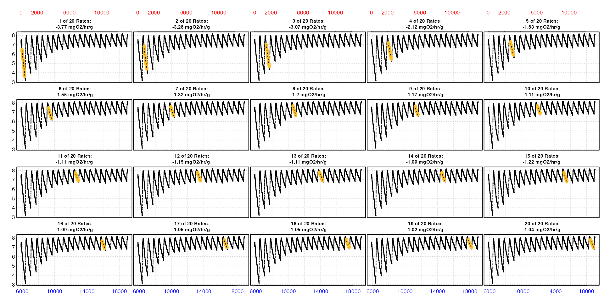
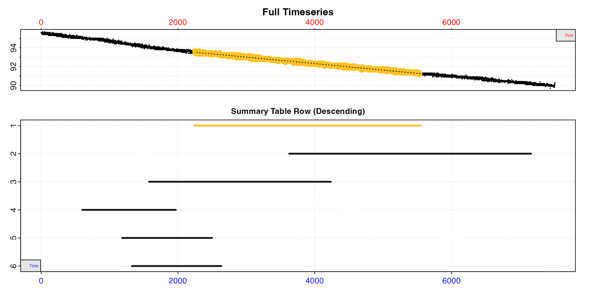

Introduction
Depending on the type of experiment or the functions used,
respR analyses can return multiple rates from a single
dataset. Once these are converted to final units in
convert_rate() this can result in an often large array of
rates from different or even overlapping regions of the data.
Multiple rates can be a result of several analyses. The
auto_rate() function uses machine learning techniques to
automatically detect the most linear regions of a dataset, as well as
being able to fit a rolling regression of a specified width over the
entire dataset and order the results in various ways. Both of these can
return hundreds to thousands of rates. calc_rate() can also
return multiple rates depending on the inputs.
calc_rate.int() and auto_rate.int() return a
single rate from every replicate in an intermittent-flow respirometry
dataset, so there will be at least as many rates as there are
replicates.
select_rate helps explore and filter
convert_rate results by selecting rates according to
various criteria. For example, extracting only positive or negative
rates, only the highest or lowest rates by number or percentile, those
above a particular R-squared, only those from certain data regions, and
numerous other methods that allow advanced filtering of rates. This
allows for application of consistent rate selection criteria and
reporting of results. Several methods also allow the results to be
reordered by that metric, which can be useful in several situations.
Flowthrough analyses
select_rate can also select from multiple rates in
convert_rate.ft objects from flowthrough analyses. There is
also a select_rate.ft function but it is a simple wrapper
for select_rate. Therefore the following examples also
apply to filtering flowthrough results, but see
vignette("flowthrough") for some specific examples.
Selection methods
The function includes a wide array of criteria by which
convert_rate results can be filtered. The full list can be
seen in the Details
section of the help file. We will run through a few specific examples
below. Multiple selection criteria can be applied by saving the output
and processing it through the function multiple times with different
criteria, or alternatively via piping (%>% or
|>). See examples.
Rep and rank columns
For most selection operations, the summary table $rank
column is important in keeping track of results. The $rank
column is context-specific, and what it represents depends on the type
of experiment analysed or the function used to determine the rates. If
numeric values were converted, it is the order in which they were
entered. Similarly, if calc_rate was used to determine
multiple rates, it is the order as entered using from and
to. For auto_rate it relates to the
method input. For example it indicates the kernel density
ranking if the linear method was used, the ascending or
descending ordering by absolute rate value if lowest or
highest were used, or numerical order if
minimum or maximum were used. For
intermittent-flow experiments analysed via calc_rate.int or
auto_rate.int it indicates the ranking within each
replicate in the $rep column (though since usually these
only return a single rate per replicate it is usually filled with the
value 1).
Therefore the $rep and $rank columns can be
used to keep track of selections or reordering because the original
values will be retained unchanged through these operations. The original
order can always be restored by using
method = "rep", n = NULL or
method = "rank", n = NULL, in which case the table will be
reordered by $rep then $rank.
Plot
As of v2.1,
convert_rate has new plotting functionality that helps
explore the results and view the result of selection or reordering.
Either pass plot = TRUE in the convert_rate
call (default is FALSE), or alternatively the output object
can be passed or piped to plot() after processing in
select_rate.
There are three ways of plotting the results:
type = "full"
The default is type = "full", which plots each rate
(summary table row) in order in the context of the entire data
timeseries up to a maximum of 20. These can be selected using
pos, which represents rows of the summary table with the
default being pos = 1:20.
plot(sard)This lets you see where each rate occurs within the dataset, and the converted rate value is in the title. The values on the axes - time (bottom), row (top), and oxygen (left) - are in the units of the original raw data.
type = "rate"
This plots the entire data timeseries on the upper plot, and on the lower plot the output rate values in the chosen output units. Each rate is plotted against the middle of the region used to determine it.
plot(sard, type = "rate")
This lets you see how the rate varies across the dataset and decide how to filter the results. Here for example, rates are higher at the start of the experiment, and stable low rates only occur after around timepoint 2000.
type = "overlap"
This plot helps with understanding how rates are distributed across
the dataset, particularly the data region each uses and how they may
overlap. The top plot is the entire data timeseries. In the lower plot
every rate regression in $summary is represented by a line
showing its location within the timeseries. The y-axis represents the
position (i.e. row) of the summary table descending from top to bottom.
If no reordering or selection has been performed, this will be
equivalent to the $rep or $rank column. See above section for what these may represent, but note
as reordering or selection is performed rank and summary table position
will not necessarily be equivalent.
plot(sard, type = "overlap")Here we have analysed the data using the auto_rate
"linear" method, and we can see many of the results are
from similar or essentially equivalent regions of the data. See below
for how these may be reduced.
Additional options
Additional inputs can be passed, such as pos,
quiet, legend, and highlight. See
help("select_rate").
Examples
These are brief run-throughs of a few example selection or reordering
operations. More practical examples can be seen in
vignette("intermittent_long"). These are not
recommendations for how you should conduct your own analyses, or for
what selection criteria are appropriate for particular datasets, they
are simply examples to demonstrate the functionality.
1. auto_rate "linear" results
Generally speaking the linear method is very good at
identifying linear regions, and typically the top result is the most
appropriate to report. However, it depends on the aims of your
experiment and there may be situations where we would want to further
refine the returned results.
We’ll use the sardine.rd dataset, and let’s say we are
interested in extracting a standard metabolic rate (SMR), that is a
basal or maintenance rate. Generally this is the lowest rate observed,
and usually that requires defining the duration over which the rate is
sustained when we extract it, and how to choose this duration is
arguably not objective. The linear method has a benefit
here, in that it will identify consistently maintained rates, including
the lowest consistently maintained rates. However, it will also identify
all consistently maintained rates in the dataset, so the lowest is not
necessarily the top-ranked one.
We’ll inspect the data, pipe the result to
auto_rate using the default inputs of the
"linear" method and width = 0.2, then adjust
the rates for background (using an invented value as an example), then
convert the rates to our final units.
sard <-
inspect(sardine.rd) |>
auto_rate() |>
adjust_rate(by = -0.00006) |>
convert_rate(oxy.unit = "%Air",
time.unit = "sec",
output.unit = "mg/h/kg",
volume = 12.3,
mass = 0.0477,
S = 35,
t = 14.8,
p = 1.013) 
This is large dataset, from a relatively long experiment of over 2
hours. The auto_rate analysis has identified 39 linear
regions, of which the above plot is the highest ranked one, or most
linear according to the kernel density analysis. This does not mean it’s
the lowest rate, but is generally the most consistently maintained
one.
Let’s look at the convert_rate summary table, which
contains all rate regression parameters and data locations, adjustments
(if applied), units, and more.
summary(sard)
#>
#> # summary.convert_rate # ----------------
#> Summary of all converted rates:
#>
#> rep rank intercept_b0 slope_b1 rsq density row endrow time endtime oxy endoxy rate adjustment rate.adjusted rate.input oxy.unit time.unit volume mass area S t P rate.abs rate.m.spec rate.a.spec output.unit rate.output
#> 1: NA 1 94.9 -0.000661 0.982 19082 3659 6736 3658 6735 92.6 90.4 -0.000661 -0.00006 -0.000601 -0.000601 %Air sec 12.3 0.0477 NA 35 14.8 1.01 -2.17 -45.5 NA mgO2/hr/kg -45.5
#> 2: NA 2 95.1 -0.000688 0.986 17476 2242 5543 2241 5542 93.7 91.2 -0.000688 -0.00006 -0.000628 -0.000628 %Air sec 12.3 0.0477 NA 35 14.8 1.01 -2.27 -47.5 NA mgO2/hr/kg -47.5
#> 3: NA 3 94.9 -0.000662 0.987 15982 3628 7164 3627 7163 92.5 90.2 -0.000662 -0.00006 -0.000602 -0.000602 %Air sec 12.3 0.0477 NA 35 14.8 1.01 -2.17 -45.6 NA mgO2/hr/kg -45.6
#> 4: NA 4 95.1 -0.000708 0.979 9211 1578 4236 1577 4235 94.2 92.2 -0.000708 -0.00006 -0.000648 -0.000648 %Air sec 12.3 0.0477 NA 35 14.8 1.01 -2.34 -49.1 NA mgO2/hr/kg -49.1
#> 5: NA 5 95.1 -0.000706 0.971 7562 1947 4236 1946 4235 93.8 92.2 -0.000706 -0.00006 -0.000646 -0.000646 %Air sec 12.3 0.0477 NA 35 14.8 1.01 -2.33 -48.9 NA mgO2/hr/kg -48.9
#> 6: NA 6 95.7 -0.001047 0.961 6865 601 1969 600 1968 95.1 93.7 -0.001047 -0.00006 -0.000987 -0.000987 %Air sec 12.3 0.0477 NA 35 14.8 1.01 -3.56 -74.7 NA mgO2/hr/kg -74.7
#> 7: NA 7 95.1 -0.000709 0.978 6399 1578 4196 1577 4195 94.2 92.2 -0.000709 -0.00006 -0.000649 -0.000649 %Air sec 12.3 0.0477 NA 35 14.8 1.01 -2.34 -49.1 NA mgO2/hr/kg -49.1
#> 8: NA 8 94.8 -0.000628 0.929 6288 5050 6613 5049 6612 91.4 90.5 -0.000628 -0.00006 -0.000568 -0.000568 %Air sec 12.3 0.0477 NA 35 14.8 1.01 -2.05 -43.0 NA mgO2/hr/kg -43.0
#> 9: NA 9 94.7 -0.000619 0.912 2611 5123 6507 5122 6506 91.5 90.6 -0.000619 -0.00006 -0.000559 -0.000559 %Air sec 12.3 0.0477 NA 35 14.8 1.01 -2.02 -42.4 NA mgO2/hr/kg -42.4
#> 10: NA 10 95.7 -0.001043 0.961 1918 596 1981 595 1980 95.0 93.6 -0.001043 -0.00006 -0.000983 -0.000983 %Air sec 12.3 0.0477 NA 35 14.8 1.01 -3.55 -74.4 NA mgO2/hr/kg -74.4
#> 11: NA 11 95.7 -0.001040 0.961 1734 589 1983 588 1982 95.1 93.8 -0.001040 -0.00006 -0.000980 -0.000980 %Air sec 12.3 0.0477 NA 35 14.8 1.01 -3.54 -74.2 NA mgO2/hr/kg -74.2
#> 12: NA 12 95.7 -0.001035 0.962 1675 571 1989 570 1988 95.1 93.9 -0.001035 -0.00006 -0.000975 -0.000975 %Air sec 12.3 0.0477 NA 35 14.8 1.01 -3.52 -73.8 NA mgO2/hr/kg -73.8
#> 13: NA 13 95.7 -0.001042 0.961 1461 594 1982 593 1981 95.0 93.8 -0.001042 -0.00006 -0.000982 -0.000982 %Air sec 12.3 0.0477 NA 35 14.8 1.01 -3.55 -74.3 NA mgO2/hr/kg -74.3
#> 14: NA 14 95.7 -0.001039 0.961 1370 587 1987 586 1986 95.0 93.8 -0.001039 -0.00006 -0.000979 -0.000979 %Air sec 12.3 0.0477 NA 35 14.8 1.01 -3.53 -74.1 NA mgO2/hr/kg -74.1
#> 15: NA 15 95.7 -0.001037 0.961 1272 582 1988 581 1987 95.2 93.8 -0.001037 -0.00006 -0.000977 -0.000977 %Air sec 12.3 0.0477 NA 35 14.8 1.01 -3.53 -74.0 NA mgO2/hr/kg -74.0
#> 16: NA 16 95.7 -0.001034 0.962 1269 570 1992 569 1991 95.0 93.8 -0.001034 -0.00006 -0.000974 -0.000974 %Air sec 12.3 0.0477 NA 35 14.8 1.01 -3.52 -73.8 NA mgO2/hr/kg -73.8
#> 17: NA 17 95.1 -0.000705 0.915 724 1578 2900 1577 2899 94.2 93.0 -0.000705 -0.00006 -0.000645 -0.000645 %Air sec 12.3 0.0477 NA 35 14.8 1.01 -2.33 -48.9 NA mgO2/hr/kg -48.9
#> 18: NA 18 95.2 -0.000717 0.918 591 1518 2831 1517 2830 94.1 93.2 -0.000717 -0.00006 -0.000657 -0.000657 %Air sec 12.3 0.0477 NA 35 14.8 1.01 -2.37 -49.8 NA mgO2/hr/kg -49.8
#> 19: NA 19 95.2 -0.000716 0.918 582 1518 2838 1517 2837 94.1 93.2 -0.000716 -0.00006 -0.000656 -0.000656 %Air sec 12.3 0.0477 NA 35 14.8 1.01 -2.37 -49.7 NA mgO2/hr/kg -49.7
#> 20: NA 20 95.4 -0.000855 0.935 581 1185 2499 1184 2498 94.6 93.3 -0.000855 -0.00006 -0.000795 -0.000795 %Air sec 12.3 0.0477 NA 35 14.8 1.01 -2.87 -60.2 NA mgO2/hr/kg -60.2
#> 21: NA 21 95.1 -0.000702 0.915 577 1584 2908 1583 2907 94.1 93.2 -0.000702 -0.00006 -0.000642 -0.000642 %Air sec 12.3 0.0477 NA 35 14.8 1.01 -2.32 -48.6 NA mgO2/hr/kg -48.6
#> 22: NA 22 95.4 -0.000855 0.935 577 1185 2497 1184 2496 94.6 93.2 -0.000855 -0.00006 -0.000795 -0.000795 %Air sec 12.3 0.0477 NA 35 14.8 1.01 -2.87 -60.2 NA mgO2/hr/kg -60.2
#> 23: NA 23 95.2 -0.000721 0.918 575 1514 2823 1513 2822 94.2 93.0 -0.000721 -0.00006 -0.000661 -0.000661 %Air sec 12.3 0.0477 NA 35 14.8 1.01 -2.39 -50.0 NA mgO2/hr/kg -50.0
#> 24: NA 24 95.5 -0.000892 0.936 551 1083 2391 1082 2390 94.6 93.3 -0.000892 -0.00006 -0.000832 -0.000832 %Air sec 12.3 0.0477 NA 35 14.8 1.01 -3.01 -63.0 NA mgO2/hr/kg -63.0
#> 25: NA 25 95.4 -0.000850 0.933 542 1215 2519 1214 2518 94.4 93.4 -0.000850 -0.00006 -0.000790 -0.000790 %Air sec 12.3 0.0477 NA 35 14.8 1.01 -2.85 -59.8 NA mgO2/hr/kg -59.8
#> 26: NA 26 95.5 -0.000894 0.937 501 1067 2390 1066 2389 94.6 93.6 -0.000894 -0.00006 -0.000834 -0.000834 %Air sec 12.3 0.0477 NA 35 14.8 1.01 -3.01 -63.1 NA mgO2/hr/kg -63.1
#> 27: NA 27 95.5 -0.000894 0.938 499 1067 2389 1066 2388 94.6 93.3 -0.000894 -0.00006 -0.000834 -0.000834 %Air sec 12.3 0.0477 NA 35 14.8 1.01 -3.01 -63.2 NA mgO2/hr/kg -63.2
#> 28: NA 28 95.3 -0.000803 0.928 496 1324 2634 1323 2633 94.3 93.3 -0.000803 -0.00006 -0.000743 -0.000743 %Air sec 12.3 0.0477 NA 35 14.8 1.01 -2.68 -56.3 NA mgO2/hr/kg -56.3
#> 29: NA 29 95.5 -0.000894 0.937 495 1069 2389 1068 2388 94.5 93.3 -0.000894 -0.00006 -0.000834 -0.000834 %Air sec 12.3 0.0477 NA 35 14.8 1.01 -3.01 -63.2 NA mgO2/hr/kg -63.2
#> 30: NA 30 95.3 -0.000802 0.927 489 1328 2637 1327 2636 94.3 93.3 -0.000802 -0.00006 -0.000742 -0.000742 %Air sec 12.3 0.0477 NA 35 14.8 1.01 -2.68 -56.2 NA mgO2/hr/kg -56.2
#> 31: NA 31 95.3 -0.000802 0.928 488 1323 2638 1322 2637 94.3 93.3 -0.000802 -0.00006 -0.000742 -0.000742 %Air sec 12.3 0.0477 NA 35 14.8 1.01 -2.68 -56.2 NA mgO2/hr/kg -56.2
#> 32: NA 32 95.3 -0.000802 0.928 477 1323 2637 1322 2636 94.3 93.3 -0.000802 -0.00006 -0.000742 -0.000742 %Air sec 12.3 0.0477 NA 35 14.8 1.01 -2.68 -56.2 NA mgO2/hr/kg -56.2
#> 33: NA 33 95.4 -0.000854 0.935 472 1185 2501 1184 2500 94.6 93.4 -0.000854 -0.00006 -0.000794 -0.000794 %Air sec 12.3 0.0477 NA 35 14.8 1.01 -2.87 -60.1 NA mgO2/hr/kg -60.1
#> 34: NA 34 95.4 -0.000854 0.935 447 1186 2500 1185 2499 94.4 93.3 -0.000854 -0.00006 -0.000794 -0.000794 %Air sec 12.3 0.0477 NA 35 14.8 1.01 -2.87 -60.1 NA mgO2/hr/kg -60.1
#> 35: NA 35 95.5 -0.000894 0.938 421 1063 2394 1062 2393 94.5 93.5 -0.000894 -0.00006 -0.000834 -0.000834 %Air sec 12.3 0.0477 NA 35 14.8 1.01 -3.01 -63.1 NA mgO2/hr/kg -63.1
#> 36: NA 36 95.5 -0.000894 0.937 388 1066 2393 1065 2392 94.7 93.4 -0.000894 -0.00006 -0.000834 -0.000834 %Air sec 12.3 0.0477 NA 35 14.8 1.01 -3.01 -63.1 NA mgO2/hr/kg -63.1
#> 37: NA 37 95.3 -0.000803 0.929 376 1315 2641 1314 2640 94.3 93.3 -0.000803 -0.00006 -0.000743 -0.000743 %Air sec 12.3 0.0477 NA 35 14.8 1.01 -2.68 -56.3 NA mgO2/hr/kg -56.3
#> 38: NA 38 95.3 -0.000803 0.929 369 1317 2641 1316 2640 94.3 93.3 -0.000803 -0.00006 -0.000743 -0.000743 %Air sec 12.3 0.0477 NA 35 14.8 1.01 -2.68 -56.2 NA mgO2/hr/kg -56.2
#> 39: NA 39 95.3 -0.000803 0.928 322 1325 2635 1324 2634 94.2 93.3 -0.000803 -0.00006 -0.000743 -0.000743 %Air sec 12.3 0.0477 NA 35 14.8 1.01 -2.68 -56.2 NA mgO2/hr/kg -56.2
#> rep rank intercept_b0 slope_b1 rsq density row endrow time endtime oxy endoxy rate adjustment rate.adjusted rate.input oxy.unit time.unit volume mass area S t P rate.abs rate.m.spec rate.a.spec output.unit rate.output
#> -----------------------------------------Obviously this is a lot of information. The rate.output,
which is the primary output we are interested in, varies in value by
quite a lot. The r-squared of the regressions is fairly variable. The
linear regions also come from all over the dataset as can be seen by
looking at the time or row columns. It might be difficult to know how to
handle this many results and arrive at a final reportable rate.
If we are looking for the lowest linear rate, the top ranked result here is actually a very good one! It is amongst the lowest rates (only 2 in rows 8 and 9 are lower), has a high r-squared, and is sustained over a large region of the data. This would probably be completely appropriate to report as the SMR, however we’ll proceed with selection to show how these criteria can be applied, and then these could be applied to other experiments.
Plot
We can use the convert_rate plotting functionality to
get a better idea of rate values and how they are distributed. We’ll
look at both the rate value plot and the overlap plot.
plot(sard, type = "rate")
#> plot.convert_rate: Plotting all rate(s)...
plot(sard, type = "overlap")
#> plot.convert_rate: Plotting all rate(s)...
We can see the rates are higher at the start of the dataset, after which they stabilise. From the overlap plot we can see many of the linear regions substantially overlap and are essentially from the same regions of the data. Some are even completely contained within others. We don’t need to keep all of these different results.
Selection of rates
select_rate allows us to select out only the results
that meet certain criteria. If we are interested in the lowest rates we
can use this method to select any number of the lowest rates using
n. Here is the lowest single rate.
sard |>
select_rate(method = "lowest", n = 1) |>
plot(quiet = TRUE) |>
summary()#>
#> # summary.convert_rate # ----------------
#> Summary of all converted rates:
#>
#> rep rank intercept_b0 slope_b1 rsq density row endrow time endtime oxy endoxy rate adjustment rate.adjusted rate.input oxy.unit time.unit volume mass area S t P rate.abs rate.m.spec rate.a.spec output.unit rate.output
#> 1: NA 9 94.7 -0.000619 0.912 2611 5123 6507 5122 6506 91.5 90.6 -0.000619 -0.00006 -0.000559 -0.000559 %Air sec 12.3 0.0477 NA 35 14.8 1.01 -2.02 -42.4 NA mgO2/hr/kg -42.4
#> -----------------------------------------Additional selection criteria
Objectively, this is a perfectly acceptable result and would be fine to report, but let’s apply a couple of additional criteria. The result above has a relatively low r-squared than others in the dataset, and also is around 23 minutes in duration.
Let’s say we are only interested in rate results with an r-squared
above 0.95, and also that we are only interested in rates which are
sustained for at least 30 minutes (1800s). We can apply multiple
selection criteria by using pipes (alternatively you can save the output
and process it through select_rate multiple times).
sard |>
select_rate(method = "rsq", n = c(0.95,1)) |>
select_rate(method = "duration", n = c(1800, Inf)) |>
select_rate(method = "lowest", n = 1) |>
plot(quiet = TRUE) |>
summary()#>
#> # summary.convert_rate # ----------------
#> Summary of all converted rates:
#>
#> rep rank intercept_b0 slope_b1 rsq density row endrow time endtime oxy endoxy rate adjustment rate.adjusted rate.input oxy.unit time.unit volume mass area S t P rate.abs rate.m.spec rate.a.spec output.unit rate.output
#> 1: NA 1 94.9 -0.000661 0.982 19082 3659 6736 3658 6735 92.6 90.4 -0.000661 -0.00006 -0.000601 -0.000601 %Air sec 12.3 0.0477 NA 35 14.8 1.01 -2.17 -45.5 NA mgO2/hr/kg -45.5
#> -----------------------------------------Now our rate is slightly higher than in the previous example, but it fulfils these additional criteria, so we could report this as our final rate if these criteria were what we decided upon.
Please note again however - this is not a recommendation as to what rates or criteria you should apply to your own data. This is just an example, and the important point to take is that the same selection criteria can be consistently applied and documented across multiple analyses.
Reporting the result
select_rate allows you to apply very specific selection
criteria in a specific priority order. Because of this is it
straightforward to report the analysis in clear language. We might
report the above analysis in just a short passage in the methods like
this:
“Data was analysed using the R package respR
(Harianto et al. 2019). The auto_rate”linear” method was used to
automatically identify linear regions of the data. SMR was defined as
the lowest of these rates with r-squared above 0.95 sustained for at
least 30 minutes.”
2. auto_rate "lowest" results
Let’s use the sardine.rd dataset again, and let’s say we
again want to extract a standard metabolic rate (SMR), but we want to
define a specific duration.
method = "lowest"
The SMR rates we extracted above occur over durations of 45 minutes
to nearly an hour. But maybe we want to standardise our analyses and
comparisons of different specimens by defining our SMR as the lowest
rate across a specific duration, for example 20 minutes. We can use the
auto_rate method = "lowest" to output all
rates of this specific width and order them from lowest to
highest value, adjust and convert these, then apply some additional
selection criteria.
Here we do a rolling regression of 20 minutes (1200
seconds) width in the "time" metric.
sard <- inspect(sardine.rd) |>
auto_rate(method = "lowest", width = 1200, by = "time") |>
adjust_rate(by = -0.00006) |>
convert_rate(oxy.unit = "%Air",
time.unit = "sec",
output.unit = "mg/h/kg",
volume = 12.3,
mass = 0.0477,
S = 35,
t = 14.8,
p = 1.013) |>
summary()#>
#> # summary.convert_rate # ----------------
#> Summary of all converted rates:
#>
#> rep rank intercept_b0 slope_b1 rsq density row endrow time endtime oxy endoxy rate adjustment rate.adjusted rate.input oxy.unit time.unit volume mass area S t P rate.abs rate.m.spec rate.a.spec output.unit rate.output
#> 1: NA 1 94.7 -0.000612 0.886 NA 5257 6457 5256 6456 91.4 90.9 -0.000612 -0.00006 -0.000552 -0.000552 %Air sec 12.3 0.0477 NA 35 14.8 1.01 -1.99 -41.8 NA mgO2/hr/kg -41.8
#> 2: NA 2 94.7 -0.000612 0.886 NA 5258 6458 5257 6457 91.4 90.7 -0.000612 -0.00006 -0.000552 -0.000552 %Air sec 12.3 0.0477 NA 35 14.8 1.01 -1.99 -41.8 NA mgO2/hr/kg -41.8
#> 3: NA 3 94.7 -0.000612 0.886 NA 5259 6459 5258 6458 91.3 90.7 -0.000612 -0.00006 -0.000552 -0.000552 %Air sec 12.3 0.0477 NA 35 14.8 1.01 -1.99 -41.8 NA mgO2/hr/kg -41.8
#> 4: NA 4 94.7 -0.000612 0.888 NA 5254 6454 5253 6453 91.5 90.7 -0.000612 -0.00006 -0.000552 -0.000552 %Air sec 12.3 0.0477 NA 35 14.8 1.01 -1.99 -41.8 NA mgO2/hr/kg -41.8
#> 5: NA 5 94.7 -0.000612 0.887 NA 5256 6456 5255 6455 91.4 90.8 -0.000612 -0.00006 -0.000552 -0.000552 %Air sec 12.3 0.0477 NA 35 14.8 1.01 -2.00 -41.8 NA mgO2/hr/kg -41.8
#> ---
#> 6309: NA 6309 95.8 -0.001089 0.954 NA 695 1895 694 1894 95.0 93.8 -0.001089 -0.00006 -0.001029 -0.001029 %Air sec 12.3 0.0477 NA 35 14.8 1.01 -3.72 -77.9 NA mgO2/hr/kg -77.9
#> 6310: NA 6310 95.8 -0.001089 0.954 NA 692 1892 691 1891 95.0 93.8 -0.001089 -0.00006 -0.001029 -0.001029 %Air sec 12.3 0.0477 NA 35 14.8 1.01 -3.72 -77.9 NA mgO2/hr/kg -77.9
#> 6311: NA 6311 95.8 -0.001089 0.954 NA 694 1894 693 1893 95.0 93.8 -0.001089 -0.00006 -0.001029 -0.001029 %Air sec 12.3 0.0477 NA 35 14.8 1.01 -3.72 -77.9 NA mgO2/hr/kg -77.9
#> 6312: NA 6312 95.8 -0.001089 0.954 NA 691 1891 690 1890 95.0 93.8 -0.001089 -0.00006 -0.001029 -0.001029 %Air sec 12.3 0.0477 NA 35 14.8 1.01 -3.72 -77.9 NA mgO2/hr/kg -77.9
#> 6313: NA 6313 95.8 -0.001089 0.954 NA 693 1893 692 1892 95.0 93.7 -0.001089 -0.00006 -0.001029 -0.001029 %Air sec 12.3 0.0477 NA 35 14.8 1.01 -3.72 -77.9 NA mgO2/hr/kg -77.9
#> -----------------------------------------The function has fit every regression of 1200s width across the entire dataset and ranked them in order of absolute rate value from lowest to highest. The plot shows the top ranking result, in this case the very lowest rate. We may not necessarily want to use this result however. In this case it has a relatively low r-squared compared to others (we’re not showing the full summary table but it ranges from around 0.88 to 0.95).
Let’s look at the "overlap" plot output.
sard |>
plot(type = "overlap") This plot is perhaps difficult to understand at first, but should
become clear. The summary table is ordered from lowest to highest rates
descending. The lower plot reflects this, and shows most of these lower
rates, the ones at the top of both this plot and the summary table, are
towards the end of the dataset. By contrast, high rates are at the
start. This plot is essentially the rolling rate (panel 4) of the
auto_rate plot just above flipped vertically. See how the
lowest rates occur around timepoint 6000 in both.
We are looking for lowest rates, so we don’t need to keep any rates
before around timepoint 3000. We can remove those using
time_omit. Let’s also only keep those with r-squared above
0.9.
sard |>
select_rate(method = "time_omit", n = c(0,3000)) |>
select_rate(method = "rsq", n = c(0.9, 1)) |>
plot(type = "overlap") |>
summary()
#>
#> # plot.convert_rate # -------------------#> -----------------------------------------
#>
#> # summary.convert_rate # ----------------
#> Summary of all converted rates:
#>
#> rep rank intercept_b0 slope_b1 rsq density row endrow time endtime oxy endoxy rate adjustment rate.adjusted rate.input oxy.unit time.unit volume mass area S t P rate.abs rate.m.spec rate.a.spec output.unit rate.output
#> 1: NA 562 94.9 -0.000645 0.900 NA 3845 5045 3844 5044 92.4 91.6 -0.000645 -0.00006 -0.000585 -0.000585 %Air sec 12.3 0.0477 NA 35 14.8 1.01 -2.11 -44.3 NA mgO2/hr/kg -44.3
#> 2: NA 694 94.9 -0.000653 0.903 NA 4521 5721 4520 5720 91.8 91.1 -0.000653 -0.00006 -0.000593 -0.000593 %Air sec 12.3 0.0477 NA 35 14.8 1.01 -2.14 -44.9 NA mgO2/hr/kg -44.9
#> 3: NA 699 94.9 -0.000653 0.903 NA 4519 5719 4518 5718 92.0 91.2 -0.000653 -0.00006 -0.000593 -0.000593 %Air sec 12.3 0.0477 NA 35 14.8 1.01 -2.14 -44.9 NA mgO2/hr/kg -44.9
#> 4: NA 700 94.9 -0.000653 0.903 NA 4520 5720 4519 5719 92.1 91.1 -0.000653 -0.00006 -0.000593 -0.000593 %Air sec 12.3 0.0477 NA 35 14.8 1.01 -2.14 -44.9 NA mgO2/hr/kg -44.9
#> 5: NA 702 94.9 -0.000653 0.901 NA 4584 5784 4583 5783 91.8 91.3 -0.000653 -0.00006 -0.000593 -0.000593 %Air sec 12.3 0.0477 NA 35 14.8 1.01 -2.14 -44.9 NA mgO2/hr/kg -44.9
#> ---
#> 1849: NA 4421 95.3 -0.000711 0.904 NA 6198 7398 6197 7397 90.8 90.1 -0.000711 -0.00006 -0.000651 -0.000651 %Air sec 12.3 0.0477 NA 35 14.8 1.01 -2.35 -49.3 NA mgO2/hr/kg -49.3
#> 1850: NA 4424 95.3 -0.000711 0.904 NA 6195 7395 6194 7394 90.9 90.0 -0.000711 -0.00006 -0.000651 -0.000651 %Air sec 12.3 0.0477 NA 35 14.8 1.01 -2.35 -49.3 NA mgO2/hr/kg -49.3
#> 1851: NA 4426 95.3 -0.000711 0.904 NA 6197 7397 6196 7396 90.8 90.0 -0.000711 -0.00006 -0.000651 -0.000651 %Air sec 12.3 0.0477 NA 35 14.8 1.01 -2.35 -49.3 NA mgO2/hr/kg -49.3
#> 1852: NA 4427 95.3 -0.000711 0.904 NA 6196 7396 6195 7395 90.9 90.0 -0.000711 -0.00006 -0.000651 -0.000651 %Air sec 12.3 0.0477 NA 35 14.8 1.01 -2.35 -49.3 NA mgO2/hr/kg -49.3
#> 1853: NA 4457 95.3 -0.000711 0.905 NA 6193 7393 6192 7392 90.9 90.0 -0.000711 -0.00006 -0.000651 -0.000651 %Air sec 12.3 0.0477 NA 35 14.8 1.01 -2.35 -49.3 NA mgO2/hr/kg -49.3
#> -----------------------------------------Now we are left with 1853 results. We’ll refine our selection
criteria further by only taking the 500 lowest of these rates, then
removing those which overlap with another by 90% or more (see Overlapping results section for explanation of this
method). We are doing the "overlap" method last because it
is extremely computationally intensive and the time it takes
increases exponentially with the number of results remaining.
sard |>
select_rate(method = "rsq", n = c(0.9, 1)) |>
select_rate(method = "time_omit", n = c(0,3000)) |>
select_rate(method = "lowest", n = 500) |>
select_rate(method = "overlap", n = 0.9) |>
plot(type = "overlap") |>
summary() |>
mean()
#>
#> # plot.convert_rate # -------------------#> -----------------------------------------
#>
#> # summary.convert_rate # ----------------
#> Summary of all converted rates:
#>
#> rep rank intercept_b0 slope_b1 rsq density row endrow time endtime oxy endoxy rate adjustment rate.adjusted rate.input oxy.unit time.unit volume mass area S t P rate.abs rate.m.spec rate.a.spec output.unit rate.output
#> 1: NA 562 94.9 -0.000645 0.900 NA 3845 5045 3844 5044 92.4 91.6 -0.000645 -0.00006 -0.000585 -0.000585 %Air sec 12.3 0.0477 NA 35 14.8 1.01 -2.11 -44.3 NA mgO2/hr/kg -44.3
#> 2: NA 694 94.9 -0.000653 0.903 NA 4521 5721 4520 5720 91.8 91.1 -0.000653 -0.00006 -0.000593 -0.000593 %Air sec 12.3 0.0477 NA 35 14.8 1.01 -2.14 -44.9 NA mgO2/hr/kg -44.9
#> 3: NA 1055 94.9 -0.000662 0.900 NA 3686 4886 3685 4885 92.6 91.7 -0.000662 -0.00006 -0.000602 -0.000602 %Air sec 12.3 0.0477 NA 35 14.8 1.01 -2.17 -45.6 NA mgO2/hr/kg -45.6
#> -----------------------------------------
#>
#> # mean.convert_rate # -------------------
#> Mean of all rate results:
#>
#> Mean of 3 output rates:
#> [1] -44.9
#> [1] "mgO2/hr/kg"
#> -----------------------------------------Now we are left with only 3 results. We could take the top result as our SMR, but just to show a different option this time we have piped the results to the mean function to get a final mean rate.
To repeat the note from above: this is not a recommendation as to what rates or criteria you should apply to your own data. This is just an example, and the important point to take is that the same selection criteria can be consistently applied and documented across multiple analyses.
Selection criteria ordering
Note that the order you apply selection criteria is extremely important. Applying the same criteria in a different order can give totally different results. What happens if we repeat the above but take the lowest 500 results first, then apply our r-squared range?
sard |>
select_rate(method = "lowest", n = 500) |>
select_rate(method = "rsq", n = c(0.9, 1))
#> select_rate: Selecting lowest 500 *absolute* rate values...
#> ----- Selection complete. 5813 rate(s) removed, 500 rate(s) remaining -----
#> select_rate: Selecting rates with rsq values between 0.9 and 1...
#> ----- Selection complete. 500 rate(s) removed, 0 rate(s) remaining -----Now we have no results! This is because in the original ordered results, none of the lowest 500 rates had an r-squared above 0.9.
This demonstrates how selection criteria should be consistently applied in the same priority order across different analyses.
Reporting the result
select_rate allows you to apply very specific selection
criteria in a specific priority order. Because of this is it
straightforward to report the analysis. We might report the above in
just a short passage in the methods like this:
“Data was analysed using the R package respR
(Harianto et al. 2019). The auto_rate function was used to
calculate a rolling regression of 20 minutes across the dataset. SMR was
defined as the mean of the lowest rates with r-squared above
0.9.”
3. Intermittent-flow results
select_rate becomes really useful when it comes to
dealing with the results of intermittent-flow analyses, particularly the
outputs of calc_rate.int and auto_rate.int.
When you have tens to hundreds of replicates it can be difficult to both
extract rates from them and filter the results consistently. These
functions introduced in respR
v2.1 combined with select_rate make this process really
straightforward.
A full analysis of a long intermittent-flow experiment including
results filtering using select_rate can be seen in
vignette("intermittent_long"). Here we will show a brief
example using part of the same dataset.
Data
Here we will subset a portion of the zeb_intermittent.rd
dataset, use calc_rate.int to extract a rate from the same
time period of each. We’ll specify the replicates cycle at every 660
rows using starts, use a wait phase of two
minutes (120 rows), and a measure phase of six minutes (360
rows) within each replicate. Then we convert the results, plot them in
two different ways, and show the summary table.
zeb_sub <- subset_data(zeb_intermittent.rd,
from = 5840,
to = 19039,
by = "row",
quiet = TRUE) |>
inspect(plot = FALSE) |>
calc_rate.int(starts = 660,
wait = 120,
measure = 360,
by = "row",
plot = FALSE) |>
convert_rate(oxy.unit = "mg/L",
time.unit = "secs",
output.unit = "mg/h/g",
volume = 0.12,
mass = 0.0009) |>
plot(type = "full") |>
plot(type = "rate") |>
summary()
The first type = "full" plot shows each replicate rate
in the context of the entire data series. The second
type = "rate" plot is really useful in understanding how
rates change over the course of these 20 replicates.
The summary, which is quite a large table, shows us how these rates change across the 20 replicates.
summary(zeb_sub)
#>
#> # summary.convert_rate # ----------------
#> Summary of all converted rates:
#>
#> rep rank intercept_b0 slope_b1 rsq density row endrow time endtime oxy endoxy rate adjustment rate.adjusted rate.input oxy.unit time.unit volume mass area S t P rate.abs rate.m.spec rate.a.spec output.unit rate.output
#> 1: 1 1 53.2 -0.00785 0.997 NA 121 480 5960 6319 6.45 3.57 -0.00785 NA NA -0.00785 mg/L sec 0.12 0.0009 NA NA NA NA -3.390 -3.77 NA mgO2/hr/g -3.77
#> 2: 2 1 51.9 -0.00684 0.975 NA 781 1140 6620 6979 6.82 4.41 -0.00684 NA NA -0.00684 mg/L sec 0.12 0.0009 NA NA NA NA -2.956 -3.28 NA mgO2/hr/g -3.28
#> 3: 3 1 53.6 -0.00641 0.994 NA 1441 1800 7280 7639 6.99 4.64 -0.00641 NA NA -0.00641 mg/L sec 0.12 0.0009 NA NA NA NA -2.767 -3.07 NA mgO2/hr/g -3.07
#> 4: 4 1 42.1 -0.00442 0.989 NA 2101 2460 7940 8299 7.16 5.45 -0.00442 NA NA -0.00442 mg/L sec 0.12 0.0009 NA NA NA NA -1.909 -2.12 NA mgO2/hr/g -2.12
#> 5: 5 1 40.0 -0.00382 0.989 NA 2761 3120 8600 8959 7.31 5.88 -0.00382 NA NA -0.00382 mg/L sec 0.12 0.0009 NA NA NA NA -1.648 -1.83 NA mgO2/hr/g -1.83
#> 6: 6 1 37.3 -0.00323 0.986 NA 3421 3780 9260 9619 7.47 6.31 -0.00323 NA NA -0.00323 mg/L sec 0.12 0.0009 NA NA NA NA -1.395 -1.55 NA mgO2/hr/g -1.55
#> 7: 7 1 34.9 -0.00276 0.985 NA 4081 4440 9920 10279 7.56 6.62 -0.00276 NA NA -0.00276 mg/L sec 0.12 0.0009 NA NA NA NA -1.191 -1.32 NA mgO2/hr/g -1.32
#> 8: 8 1 34.0 -0.00250 0.979 NA 4741 5100 10580 10939 7.64 6.67 -0.00250 NA NA -0.00250 mg/L sec 0.12 0.0009 NA NA NA NA -1.078 -1.20 NA mgO2/hr/g -1.20
#> 9: 9 1 35.1 -0.00245 0.973 NA 5401 5760 11240 11599 7.60 6.70 -0.00245 NA NA -0.00245 mg/L sec 0.12 0.0009 NA NA NA NA -1.057 -1.17 NA mgO2/hr/g -1.17
#> 10: 10 1 35.2 -0.00231 0.984 NA 6061 6420 11900 12259 7.64 6.88 -0.00231 NA NA -0.00231 mg/L sec 0.12 0.0009 NA NA NA NA -0.999 -1.11 NA mgO2/hr/g -1.11
#> 11: 11 1 36.9 -0.00232 0.983 NA 6721 7080 12560 12919 7.74 6.88 -0.00232 NA NA -0.00232 mg/L sec 0.12 0.0009 NA NA NA NA -1.002 -1.11 NA mgO2/hr/g -1.11
#> 12: 12 1 39.5 -0.00240 0.982 NA 7381 7740 13220 13579 7.76 6.91 -0.00240 NA NA -0.00240 mg/L sec 0.12 0.0009 NA NA NA NA -1.038 -1.15 NA mgO2/hr/g -1.15
#> 13: 13 1 40.0 -0.00232 0.981 NA 8041 8400 13880 14239 7.77 6.89 -0.00232 NA NA -0.00232 mg/L sec 0.12 0.0009 NA NA NA NA -1.003 -1.11 NA mgO2/hr/g -1.11
#> 14: 14 1 40.8 -0.00228 0.979 NA 8701 9060 14540 14899 7.69 6.92 -0.00228 NA NA -0.00228 mg/L sec 0.12 0.0009 NA NA NA NA -0.984 -1.09 NA mgO2/hr/g -1.09
#> 15: 15 1 46.5 -0.00255 0.984 NA 9361 9720 15200 15559 7.77 6.83 -0.00255 NA NA -0.00255 mg/L sec 0.12 0.0009 NA NA NA NA -1.100 -1.22 NA mgO2/hr/g -1.22
#> 16: 16 1 43.6 -0.00227 0.982 NA 10021 10380 15860 16219 7.63 6.84 -0.00227 NA NA -0.00227 mg/L sec 0.12 0.0009 NA NA NA NA -0.979 -1.09 NA mgO2/hr/g -1.09
#> 17: 17 1 44.0 -0.00220 0.977 NA 10681 11040 16520 16879 7.73 6.97 -0.00220 NA NA -0.00220 mg/L sec 0.12 0.0009 NA NA NA NA -0.949 -1.05 NA mgO2/hr/g -1.05
#> 18: 18 1 45.5 -0.00220 0.975 NA 11341 11700 17180 17539 7.84 6.97 -0.00220 NA NA -0.00220 mg/L sec 0.12 0.0009 NA NA NA NA -0.949 -1.05 NA mgO2/hr/g -1.05
#> 19: 19 1 45.8 -0.00213 0.978 NA 12001 12360 17840 18199 7.79 7.03 -0.00213 NA NA -0.00213 mg/L sec 0.12 0.0009 NA NA NA NA -0.920 -1.02 NA mgO2/hr/g -1.02
#> 20: 20 1 47.7 -0.00216 0.976 NA 12661 13020 18500 18859 7.83 6.99 -0.00216 NA NA -0.00216 mg/L sec 0.12 0.0009 NA NA NA NA -0.932 -1.04 NA mgO2/hr/g -1.04
#> -----------------------------------------Extract rates
Let’s say we are interested in two rates: a maximum metabolic rate (MMR), that is the highest rate, and a routine metabolic rate (RMR).
MMR
In this example the rate from the first replicate is clearly the
highest, but we can use select_rate to extract it. This
tells the function we are interested in the highest rates (in absolute
value, that is ignoring the sign - see help("select_rate")
for full details) and to select the single highest one
(n = 1). We also plot it to check which replicate it comes
from, and use summary with the export option
to save the full result as a data.frame.
mmr <- select_rate(zeb_sub, method = "highest", n = 1) |>
plot(type = "full") |>
summary(export = TRUE)That’s it! We can print the data frame we saved to check the result. This contains the full results, from which replicate the rate came from, the data region it was calculated over, any adjustments (which we didn’t apply here), experimental data such as respirometer volume and specimen mass, and of course the output rate and its units. This is a great way of saving the results.
mmr
#> rep rank intercept_b0 slope_b1 rsq density row endrow time endtime oxy endoxy rate adjustment rate.adjusted rate.input oxy.unit time.unit volume mass area S t P rate.abs rate.m.spec rate.a.spec output.unit rate.output
#> 1: 1 1 53.2 -0.00785 0.997 NA 121 480 5960 6319 6.45 3.57 -0.00785 NA NA -0.00785 mg/L sec 0.12 0.0009 NA NA NA NA -3.39 -3.77 NA mgO2/hr/g -3.77RMR
Getting the RMR is just as straightforward. Let’s define it as the
mean of the lowest 10th percentile of rates (quite common, but usually
in studies where there are many more replicates), so this time we pipe
the result to mean().
rmr <- select_rate(zeb_sub, method = "lowest_percentile", n = 0.1) |>
plot(type = "full") |>
mean() #>
#> # plot.convert_rate # -------------------
#> -----------------------------------------
#>
#> # mean.convert_rate # -------------------
#> Mean of all rate results:
#>
#> Mean of 2 output rates:
#> [1] -1.03
#> [1] "mgO2/hr/g"
#> -----------------------------------------Again, we can export the full results using summary.
summary(rmr, export = TRUE)
#>
#> # summary.convert_rate # ----------------
#> Summary of all converted rates:
#>
#> rep rank intercept_b0 slope_b1 rsq density row endrow time endtime oxy endoxy rate adjustment rate.adjusted rate.input oxy.unit time.unit volume mass area S t P rate.abs rate.m.spec rate.a.spec output.unit rate.output
#> 1: 19 1 45.8 -0.00213 0.978 NA 12001 12360 17840 18199 7.79 7.03 -0.00213 NA NA -0.00213 mg/L sec 0.12 0.0009 NA NA NA NA -0.920 -1.02 NA mgO2/hr/g -1.02
#> 2: 20 1 47.7 -0.00216 0.976 NA 12661 13020 18500 18859 7.83 6.99 -0.00216 NA NA -0.00216 mg/L sec 0.12 0.0009 NA NA NA NA -0.932 -1.04 NA mgO2/hr/g -1.04
#> -----------------------------------------More examples
See the following documentation and vignettes for more examples of
how select_rate can be used.
Overlapping results
A notable aspect of the auto_rate linear
method is that due to the machine learning algorithm it can often return
multiple linear regions from the same part of a dataset. There is a
special selection method to remove some or all of these overlapping
rates.
In the overlap method, the n input
indicates the proportional degree of overlap to allow for a result to be
retained. For n = 0 only rates which do not overlap at all,
that is share no data, are retained. For n = 1
rates which are entirely contained with at least one other are removed.
For values in between these, for example n = 0.5, any
regression which shares at least 50% of its data with another are
removed. This analysis is performed working from the bottom of the
summary table upwards, so generally lower ranked results are removed
first. It is recommended this method be used after other selection
criteria have been applied, as it is quite aggressive about removing
rates, and can be very computationally intensive when there are
many results.
Here we’ll show examples of how it can be used to make
auto_rate results more manageable. Let’s first look at the
results of the auto_rate "linear" method on
the sardine.rd dataset using the overlap plot
type in convert rate.
sardine.rd |>
auto_rate() |>
convert_rate(oxy.unit = "%Air",
time.unit = "sec",
output.unit = "mg/h/kg",
volume = 12.3,
mass = 0.0477,
S = 35,
t = 14.8,
p = 1.013) |>
plot(type = "overlap")
Now let’s remove all results that share 100% of their datapoints with
at least one other. Here we pipe the result to plot().
sardine.rd |>
auto_rate() |>
convert_rate(oxy.unit = "%Air",
time.unit = "sec",
output.unit = "mg/h/kg",
volume = 12.3,
mass = 0.0477,
S = 35,
t = 14.8,
p = 1.013) |>
select_rate(method = "overlap", n = 1) |>
plot(type = "overlap")This greatly reduces the number of results, but there is still a substantial overlap between them. Therefore, let’s adjust the overlap threshold to 0.9, that is regressions which share 90% or more of data with at least one other are removed.
sardine.rd |>
auto_rate() |>
convert_rate(oxy.unit = "%Air",
time.unit = "sec",
output.unit = "mg/h/kg",
volume = 12.3,
mass = 0.0477,
S = 35,
t = 14.8,
p = 1.013) |>
select_rate(method = "overlap", n = 0.9) |>
plot(type = "overlap")
#>
#> # summary.convert_rate # ----------------
#> Summary of all converted rates:
#>
#> rep rank intercept_b0 slope_b1 rsq density row endrow time endtime oxy endoxy rate adjustment rate.adjusted rate.input oxy.unit time.unit volume mass area S t P rate.abs rate.m.spec rate.a.spec output.unit rate.output
#> 1: NA 2 95.1 -0.000688 0.986 17476 2242 5543 2241 5542 93.7 91.2 -0.000688 NA NA -0.000688 %Air sec 12.3 0.0477 NA 35 14.8 1.01 -2.48 -52.1 NA mgO2/hr/kg -52.1
#> 2: NA 3 94.9 -0.000662 0.987 15982 3628 7164 3627 7163 92.5 90.2 -0.000662 NA NA -0.000662 %Air sec 12.3 0.0477 NA 35 14.8 1.01 -2.39 -50.1 NA mgO2/hr/kg -50.1
#> 3: NA 4 95.1 -0.000708 0.979 9211 1578 4236 1577 4235 94.2 92.2 -0.000708 NA NA -0.000708 %Air sec 12.3 0.0477 NA 35 14.8 1.01 -2.56 -53.6 NA mgO2/hr/kg -53.6
#> 4: NA 6 95.7 -0.001047 0.961 6865 601 1969 600 1968 95.1 93.7 -0.001047 NA NA -0.001047 %Air sec 12.3 0.0477 NA 35 14.8 1.01 -3.78 -79.2 NA mgO2/hr/kg -79.2
#> 5: NA 20 95.4 -0.000855 0.935 581 1185 2499 1184 2498 94.6 93.3 -0.000855 NA NA -0.000855 %Air sec 12.3 0.0477 NA 35 14.8 1.01 -3.09 -64.7 NA mgO2/hr/kg -64.7
#> -----------------------------------------This has greatly reduced the number of linear regions, and is a much more manageable set of results.
Full documentation
See help("select_rate") for full details of all the
selection criteria that can be applied.